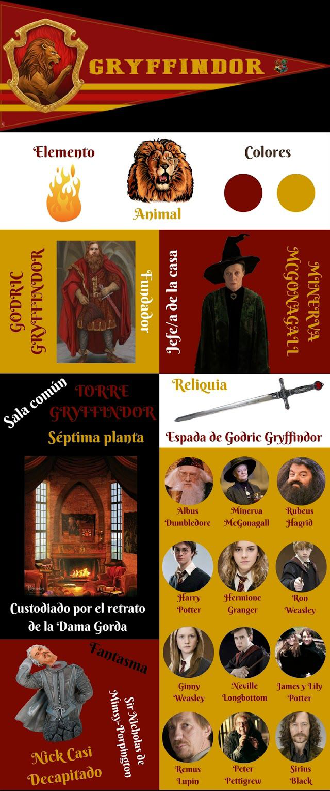
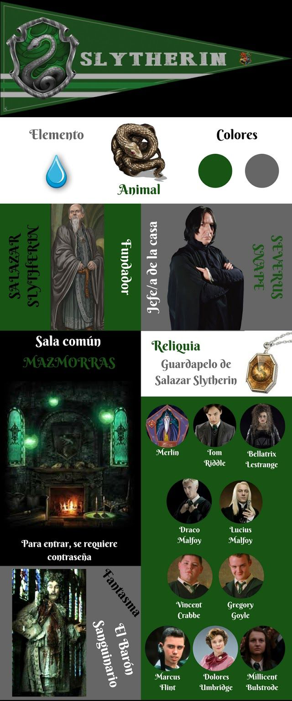
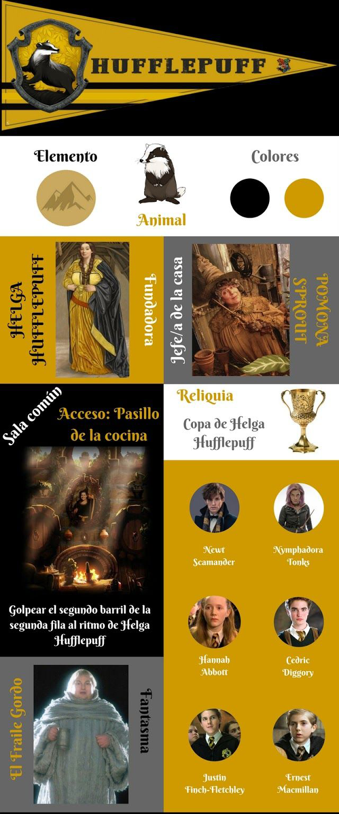
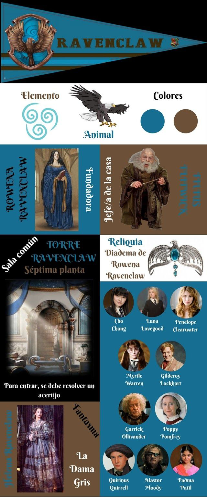

Gryffindor es una de las cuatro casas en las que se dividen los estudiantes del Colegio Hogwarts de Magia y Hechicería en los libros de Harry Potter.
Gryffindor fue fundada por Godric Gryffindor, un gran mago honorable y valiente nacido en Godric's Hollow, el mismo pueblo que Harry y Albus Dumbledore.
Datos y características principales de la casa Gryffindor:
- Jefe de la casa: Minerva McGonagall.
- Colores representativos: escarlata y dorado.
- Animal representativo: león.
- Fundador: Godric Gryffindor.
- Fantasma: Sir Nicholas de Mimsy-Porpington (más conocido como Nick Casi Decapitado).
- Características: coraje y valentía. Un buen miembro de Gryffindor tiene gran osadía, temple y caballerosidad. Son capaces de todo por defender en lo que creen y nunca se dan por vencidos. También son capaces de romper las reglas si es necesario y les encantan los retos, cuanto más difíciles, mejor. Se atreven a lo que la mayoría no se atreve. En cada obstáculo ven una oportunidad para demostrar quienes son realmente.
- Localización: la Torre de Gryffindor, o torre este, en el séptimo piso del castillo. A un lado de la torre oeste, o torre de Ravenclaw.
- Curiosidad: Godric Gryffindor solo acogía a los magos valientes y honorables, ya que eso era lo que el fundador más apreciaba.
- Reliquia más preciada: su espada (perteneció a Godric Gryffindor), aunque también está el Sombrero Seleccionador, que es el sombrero de Godric Gryffindor.
- Significado del nombre: grifo dorado.
- Elemento de Gryffindor: fuego, pues está asociado con el valor y el coraje de esta casa.

Slytherin es una de las cuatro casas en las que se dividen los estudiantes del Colegio Hogwarts en el universo de ficción de los libros y películas de la saga Harry Potter. Cada una de estas casas corresponde a uno de los fundadores de Hogwarts, en este caso a Salazar Slytherin.
Características principales de Slytherin:
- Jefe de la casa: Severus Snape. En el séptimo libro, Horace Slughorn ocupa este cargo, ya que Severus Snape se convierte en director.
- Colores representativos: verde esmeralda y plata.
- Animal representativo: serpiente
- Fundador: Salazar Slytherin
- Fantasma: El Barón Sanguinario
- Significado: Es una variación del verbo en inglés slithering, que significa literalmente "deslizándose".
- Características: Son personas que utilizan cualquier medio para lograr sus fines, poseen determinación, ambición, un cierto desdén por las normas, astucia, aspiraciones de grandeza y hambre de poder. Tienden a dudar antes de actuar, con el fin de sopesar todos los posibles resultados antes de decidir exactamente lo que se debe hacer y, una vez que lo averiguan, lo consiguen, dándole igual los medios para lograrlo.
- Localización: Su sala común está ubicada bajo el lago, el acceso se encuentra tras unos laberínticos pasillos, en las mazmorras, tras una puerta, escaleras abajo del vestíbulo. Tras la pared de piedra, se halla la Sala Común y las habitaciones, que incluyen lámparas de techo que iluminan toda su verde belleza: sillones de cuero negro, sillas y mesas de madera tallada, cubiertas de elaborados manteles.
- Elemento: Agua, asociado a la versatilidad y capacidad de adaptación de los Slytherins.
Hufflepuff es una de las cuatro casas en las que se dividen los estudiantes del Colegio Hogwarts de Magia y Hechicería en el universo de fantasía y ficción de los libros de Harry Potter.
Esta casa fue fundada por Helga Hufflepuff. Esta casa resalta las virtudes de aquellos que son justos, leales y que no temen el trabajo pesado. Sus estudiantes son honestos, trabajadores y justos.
Datos y características principales de la casa Hufflepuff:
- Jefa de la casa: Pomona Sprout.
- Colores representativos: amarillo y negro.
- Animal representativo: tejón.
- Fundadora: Helga Hufflepuff.
- Fantasma: El Fraile Gordo.
- Características: justos, leales y trabajadores. Los hufflepuff son buenas personas y suelen caer bien a todo el mundo. Son pacientes, tolerantes y siempre harán todo de forma honrada, sin hacer trampas y respetando las reglas.
- Localización: la entrada a la sala común está escondida en una pila de grandes barriles en un hueco a la derecha del corredor de la cocina. Golpea el segundo barril empezando a contar desde abajo, en medio de la segunda línea, siguiendo el ritmo de “Helga Hufflepuff” y la tapa se abrirá. Es la única casa de Hogwarts que tiene una forma de repeler a los extraños. Si se golpea la tapa equivocada o el ritmo no es el correcto, el intruso será bañado en vinagre.
- Reliquia más preciada: la copa de Helga Hufflepuff, que más tarde se convirtió en un Horrocrux por lord Voldemort que se la robó a una anciana llamada Hepzibah Smith.
- Significado del nombre: es un desarrollo a partir de los verbos ingleses "huff" (jadear) y "puff" (resoplido), en relación a la laboriosidad que se les atribuye a sus miembros.
- Curiosidades: la sala común de Hufflepuff se encuentra al lado de las cocinas (los sótanos) debido a que Helga Hufflepuff tenía un gran arte en la gastronomía y muchas de sus recetas las siguen usando los elfos de Hogwarts.
- Elemento de Hufflepuff: tierra, asociada a la laboriosidad propia de esta casa.

Hufflepuff es una de las cuatro casas en las que se dividen los estudiantes del Colegio Hogwarts de Magia y Hechicería en el universo de fantasía y ficción de los libros de Harry Potter.
Esta casa fue fundada por Helga Hufflepuff. Esta casa resalta las virtudes de aquellos que son justos, leales y que no temen el trabajo pesado. Sus estudiantes son honestos, trabajadores y justos.
Datos y características principales de la casa Hufflepuff:
- Jefa de la casa: Pomona Sprout.
- Colores representativos: amarillo y negro.
- Animal representativo: tejón.
- Fundadora: Helga Hufflepuff.
- Fantasma: El Fraile Gordo.
- Características: justos, leales y trabajadores. Los hufflepuff son buenas personas y suelen caer bien a todo el mundo. Son pacientes, tolerantes y siempre harán todo de forma honrada, sin hacer trampas y respetando las reglas.
- Localización: la entrada a la sala común está escondida en una pila de grandes barriles en un hueco a la derecha del corredor de la cocina. Golpea el segundo barril empezando a contar desde abajo, en medio de la segunda línea, siguiendo el ritmo de “Helga Hufflepuff” y la tapa se abrirá. Es la única casa de Hogwarts que tiene una forma de repeler a los extraños. Si se golpea la tapa equivocada o el ritmo no es el correcto, el intruso será bañado en vinagre.
- Reliquia más preciada: la copa de Helga Hufflepuff, que más tarde se convirtió en un Horrocrux por lord Voldemort que se la robó a una anciana llamada Hepzibah Smith.
- Significado del nombre: es un desarrollo a partir de los verbos ingleses "huff" (jadear) y "puff" (resoplido), en relación a la laboriosidad que se les atribuye a sus miembros.
- Curiosidades: la sala común de Hufflepuff se encuentra al lado de las cocinas (los sótanos) debido a que Helga Hufflepuff tenía un gran arte en la gastronomía y muchas de sus recetas las siguen usando los elfos de Hogwarts.
- Elemento de Hufflepuff: tierra, asociada a la laboriosidad propia de esta casa.

Ravenclaw es una de las cuatro casas en las que se dividen los estudiantes del Colegio Hogwarts de Magia y Hechicería en el universo de los libros y películas de Harry Potter. Esta casa fue fundada por Rowena Ravenclaw y solo son escogidas personas inteligentes, creativas y sabias.
Datos y características principales de la casa Ravenclaw:
- Jefe de la casa: Filius Flitwick.
- Colores representativos: azul y bronce en los libros, azul y plata en las películas.
- Animal representativo: águila (a pesar de que el nombre de la casa incluya la palabra 'cuervo' en inglés).
- Fundadora: Rowena Ravenclaw.
- Fantasma: Helena Ravenclaw (hija de Rowena Ravenclaw), mejor conocida como la Dama Gris.
- Cualidades requeridas: inteligencia, curiosidad y sabiduría. Una mente dispuesta y creatividad.
- Localización: la torre de Ravenclaw, o torre oeste, en el séptimo piso del castillo, a un lado de la torre este o torre de Gryffindor.
- Guardia de entrada: una puerta sin picaporte, en la que una aldaba con forma de águila formula una pregunta o acertijo para poder entrar, que no es siempre la misma. Es necesario dar la respuesta correcta para que la puerta se abra. De lo contrario, habrá que esperar a que llegue otro estudiante o profesor que pueda resolver el acertijo propuesto.
- Elemento de Ravenclaw : aire, ya que se asocia con la creatividad y la sabiduría, dos características fundamentales de esta casa.
- Significado del nombre: garra de cuervo (aunque en la versión francesa se llama Serdaigle -del francés serre d'aigle, literalmente garra de águila-).
- "Una inteligencia sin límites es el mayor tesoro de los hombres" se considera la frase que resume el espíritu de la casa.
- Se es un Ravenclaw: cuando se posee una mente hábil y dispuesta, grandes habilidades intelectuales y gran aprecio por el arte.